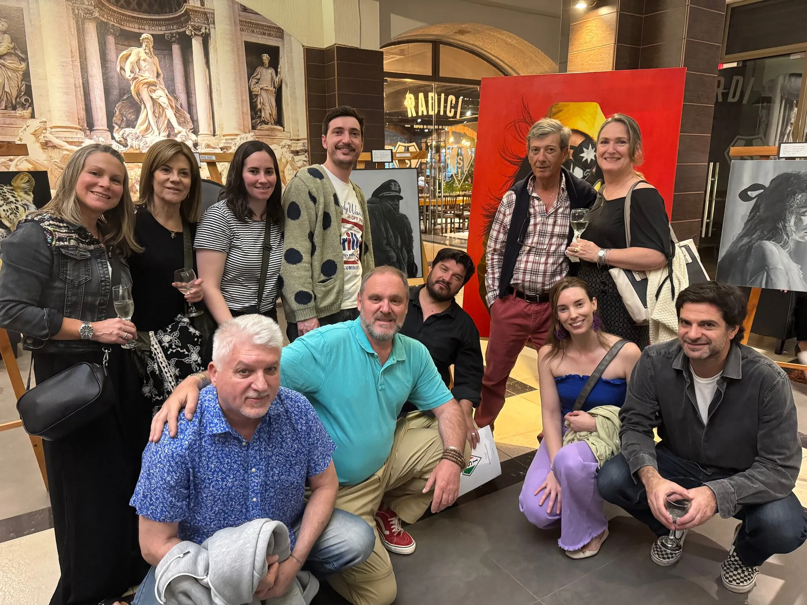

Maximiliano Langevin · Pintor realista · Santiago de Chile
Lo que va más allá de lo que se ve.
Retratos al óleo pintados capa por capa, a partir de fotografías que el propio pintor toma. Cada obra se puede recorrer de cerca, leer y consultar.
Lectura de una obra
Karin Goldberg, de cerca.
Colección · 2017 — 2025
Las obras, a su tamaño real.
En el muro, cada pintura aparece en proporción a sus centímetros reales, centradas a la misma altura, como se cuelgan en un museo. También puedes verlas como catálogo.
Estudios de color
Qué hace el color en cada cuadro.
Medimos los colores de cada tela y su proporción. Debajo, una lectura breve: qué contraste usa el pintor y hacia dónde lleva la mirada.
2024 · Estadio Italiano, Santiago
«Polímatas»
Exposición colectiva donde se mostró «El Conde», retrato en grisalla a partir de la película de Pablo Larraín. La obra terminó frente a su director y su productor.



Proceso · Dibujo, 2019
Del trazo a la forma.
Copia de un dibujo de William Bouguereau, grafito sobre papel de algodón. Cinco fotos del mismo dibujo, desde las primeras líneas hasta la firma.


Santiago, Chile · 1996
Biografía
Maximiliano Langevin Larraín
Encargos
Un retrato hecho para durar.
Así funciona un encargo, de la primera conversación a la firma.